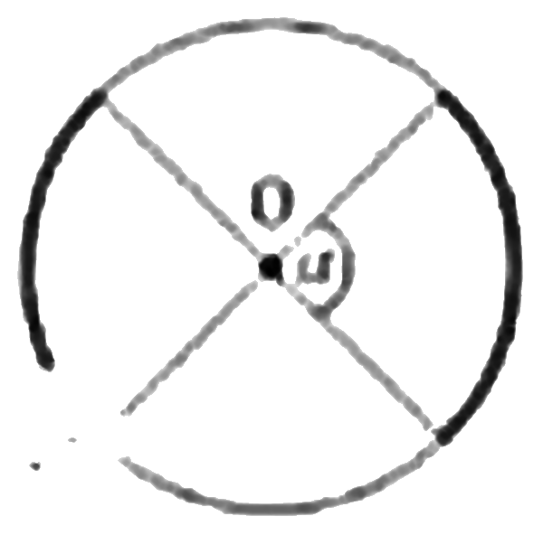

1.
נתון: x − 79 − x < 0 ; x ≠ 9
מהו תחום הערכים של x?
2.

בסרטוט שלפניכם מסילה מעגלית שמרכזה O. כדור מסתובב, במהירות קבועה, ללא הפסקה על גבי המסילה. הסיכוי שברגע כלשהו הכדור ימצא בחלקה המודגש של המסילה קטן פי 1.5 מהסיכוי שהכדור ימצא בחלקה הלא מודגש של המסילה.
לאור נתונים אלו והנתונים שבסרטוט, α = ?
3.
טום ניסה להכין מתכון לקוקטייל דאקירי שמצא באינטרנט. על פי המתכון יש לערבב מנה אחת של רום (המכילה 42% אלכוהול) עם מנה אחת של מיץ תפוזים. טום שגה וערבב מנה אחת של רום עם שתי מנות של מיץ תפוזים.
בכמה אחוזים קטן אחוז האלכוהול בקוקטייל שיצר טום מאחוז האלכוהול בקוקטייל המקורי?
⚠ עמודים 88–90 דילגו בסרטון: חסרות שאלות 4–10 של מקבץ 21.